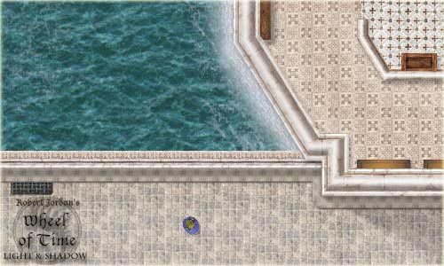

News Archive : 1 2
3
News Archive : 1 2
3
5
September 2001

This is a first image of our game ( representing the west gate of Tar Valon ). Our release 1 is now planned for October as we still have some parts to code.
Our 2D graphics engine has been updated with many new features ( multi-region images, shadows for sprites, etc... ). A 7th developer has also joined us and will help us to develop the numerous Swing user interfaces.
15 August 2001
A demo of our 2D graphics engine has been added to our SourceForge download section. Yes ! we have a working graphics engine ! For more information on the subject go to our Developer Corner. The wotlas game servers are working and we will be testing our client side very soon...
20 July 2001
Well, nothing really new, the work is coming along. We now have a working persistence library. More news will follow in August. For now, the Developer Corner has just been updated.
30 June 2001
The Wotlas team has been off for a while, but here we are again ! A new section has opened : Developer Corner. We'll present some technical aspects of our project in there.
A zip file containing some part of our source code has been added to our SourceForge download section. Click Here.
15 June 2001
A new developer has joined our team and proposed us to add a 3D engine to our project. We are studying the deal but it will probably appear in release 2. We are still planning release 1 for september. A tutorial on our network engine has been added to the library section. The About section has also been updated.
30 May 2001
Coding has begun, we have a working network engine, a working path-finding module... ( see our Sourceforge CVS repository ). Project documentation has been added to the library section ( sorry, it's in French... ).
15 May 2001
The project has now 5 developers and 7 other people working on the game content. The first phase of coding is about to begin.
The library section has opened with a first document on the game features ( click here ).
20 April 2001
Light-And-Shadow is now hosted by SourceForge. We are still working on the game architecture.
5 April 2001
Main game UI design is over. An example of game map can be found here.
20 March 2001
The project's name has been voted : click here to see the winner.
5 March 2001
The project has finally begun... More news will follow soon.